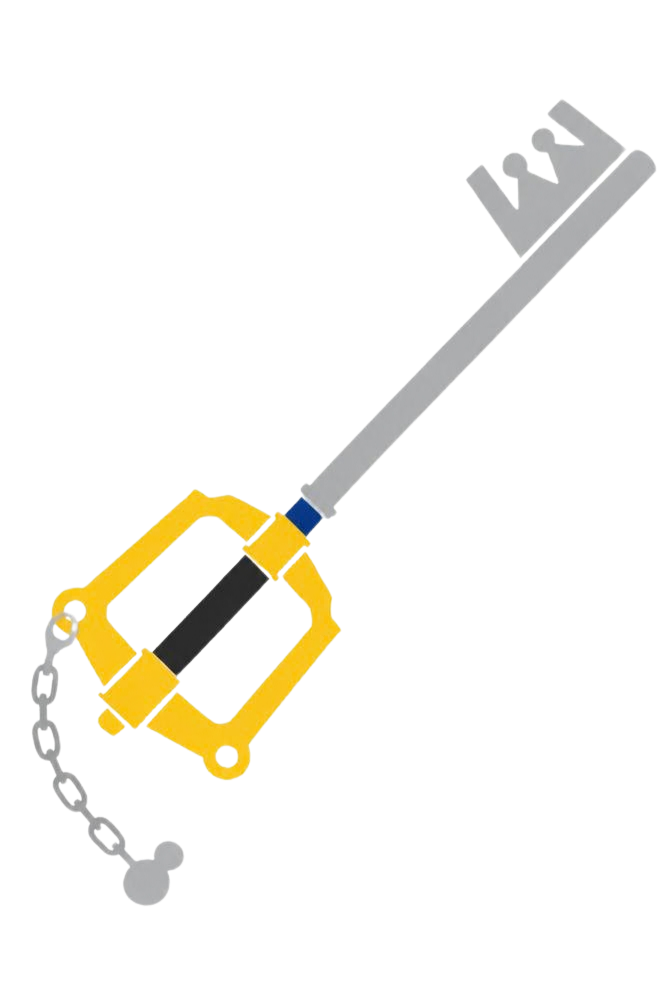
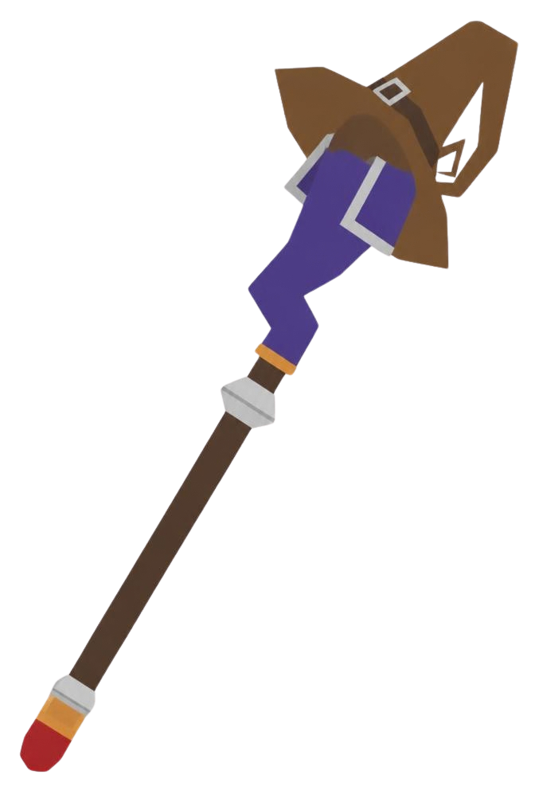
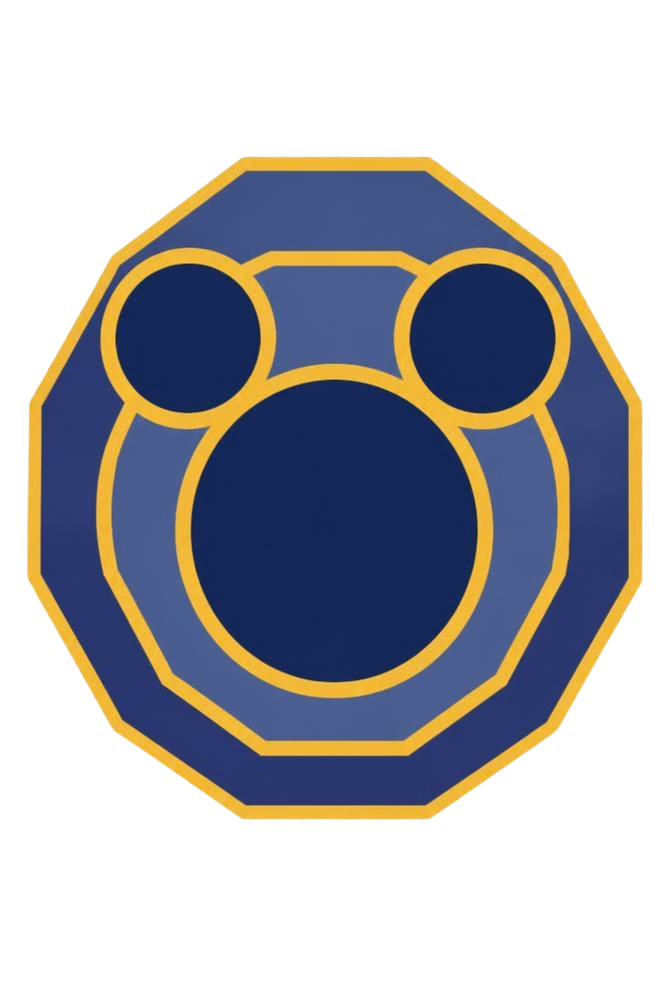

El trío inigualable
Tres caminos que se volvieron uno solo
Donald y Goofy partieron del Castillo Disney siguiendo la orden del rey Mickey: encontrar al portador de la llave antes de que la oscuridad terminara con todo. Lo encontraron en Sora, un chico que acababa de perder su isla y a sus amigos la misma noche en que los Sincorazón llegaron. Nadie planeó ese encuentro, pero desde ese momento, se hicieron inseparables.

Sora
Nacido en Destiny Islands, se convierte en el portador de la Keyblade casi por casualidad. No es el más fuerte ni el más sabio del grupo: es quien nunca deja de creer que puede encontrar el camino de regreso a casa, y esa insistencia mantiene al trío en movimiento.

Donald
Mago de la corte enviado por el rey Mickey a buscar al portador de la llave. Impaciente, orgulloso y de carácter fuerte, pero también el primero en actuar cuando la magia ya no alcanza. Su lealtad no se nota al principio: se gana, mundo tras mundo.

Goofy
Capitán de los caballeros reales, y el contrapeso tranquilo que el grupo necesita. Nunca es quien grita más fuerte ni quien pelea con más furia, pero suele ser el primero en notar lo que los otros dos, demasiado ocupados discutiendo, dejan pasar por alto.
✦
Ninguno de los tres cubre lo que le falta al otro por casualidad: la fe de Sora, el temperamento de Donald y la paciencia de Goofy terminan encajando como si siempre hubieran estado hechos para viajar juntos. Por eso, después de tantos mundos y tantas despedidas, el vínculo entre ellos sigue siendo, para muchos, el verdadero corazón de la saga.
El otro lado del camino
La oscuridad que los sigue
La oscuridad no tiene un solo nombre. Cada mundo le presta una forma distinta, una máscara nueva, un rostro que parece no haberse visto antes. Pero debajo de todas hay lo mismo: un corazón que, aunque haya sido solo por un instante, dejó de resistirse.
SINCORAZÓN
Nacen cuando un corazón cede a la oscuridad y termina consumido por ella. No tienen voluntad propia ni memoria de quién fueron: solo el impulso de buscar más corazones.
INCORPÓREOS
Cuando alguien con voluntad suficientemente fuerte pierde su corazón, a veces queda algo más: un cuerpo y una mente vacíos de sentimiento, condenados a fingir lo que ya no pueden sentir del todo.
ORGANIZACIÓN XIII
Trece Incorpóreos que dejaron de esperar recuperar lo que perdieron, y decidieron ir a buscarlo por su cuenta. Cuanto más razonables suenan sus planes, más motivos hay para desconfiar de ellos.
No todos los que caminan en la oscuridad quieren perderse en ella. Algunos, en el fondo, todavía buscan el camino de regreso — y tal vez alguien los está esperando del otro lado.